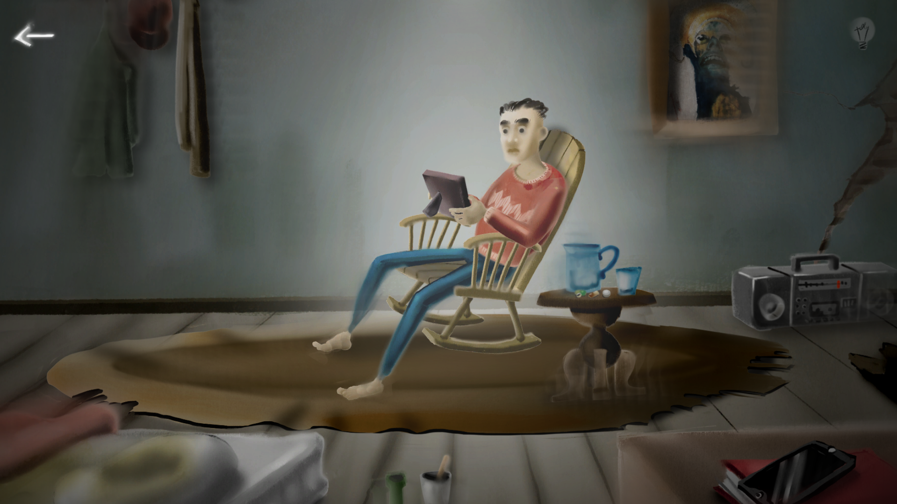

Hikaye


Transmorphosis'in gerilim ve korku dolu atmosferinde siz bulmaca severleri ağırlamaktan gurur duyuyoruz. Click and point RPG bulmaca oyunumuzda, sürükle bırak, ve platform oyun mekanik örneklerinede yer verilmiştir. El yapımı illüstrasyonlarıyla adeta bir sanat eseri niteliği taşıyan oyunumuz etkileyici atmosferiyle şimdidem birçok oyun severin övgüsünü almayı başaradı.

Yeni atanmış bir doktor olarak, uzun bir yoldan geldiniz ve bu unutulmuş akıl hastanesinde en özel hastalarla ilgilenmek ve onları tedavi etmek sizin göreviniz. Bu zorlu hastaları tedavi etmek için onların hikayeleriyle ilgili bulmacaları çözmelisiniz; bu sayede tedavilerini gerçekleştirebilirsiniz. Bu hastane çok kötü günler görmüş, işkenceler ve kötü muameleyle dolu yıllar içinde birçok akıl hastası bu hastane duvarları arasında hayatını kaybetmiş. Onların ruhlarını rahatsız etmeyin, ama onlar sizi edecek.
The Game
Biraz karmaşık ama bir o kadar da tanıdık gelen bir kabustan uyanın ve bu kaderden uzaklaşmak için kolları sıvayın, herşey normal görünüyor ancak zor bir mesai günü ilk hastanızı tedavi etmeye karar verdiğinizde başlayacak, hasta hikayeleri metinler ve özenle hazırlanmış animasyon ve ses kayıtlarıyla size sunulacak bu hikayeler gerçek hayat hikayelerinden ilham alınarak sanatsal kaygılarla abartılarak aktarılmıştır. Her hasta kendi dünyasında yaşadığı travmaları, korkuları ve umutları ile size benzersiz bir deneyim sunacak. Onların zihinlerinin derinliklerine indiğinizde, belki de kendi zihninizdeki karanlık köşelerle de yüzleşmek zorunda kalacaksınız.

Oyun mekanikleri sürekli olarak değişen bu oyunda hem mouse hem de klavye kullanmanız gerekecek, bazen ikisini aynı anda kullanmak zorunda kalacaksınız.

Oyunun basitleştirilmiş versiyonlarını akıllı telefonlarınızdan ve tabletlerinizden de oynamaz mümkün olacak
Her bölüm sonunda boss niteliğinde bulmacaları çözün ve giderek artan merak duygunuzu diğer hastaları tedavi ederek giderin

Her hasta başlı başına başka bir oyun ve kendi zorluk seviyelerini içerir
Bu oyun bitmiyor, tüm hastaları tedavi ettiniz ancak yeni bölümler yolda, DLC olarak sunulacak olan yeni hastalar bazen ücretsiz bazende küçük bir ücret karşılığında Transmorphosis severlere sunulacak

Oyunumuzu tasarlarken "Biz ne oynamak istiyoruz?" sorusuna cevap aradık. Oyunun geliştirici ekibi, bu cevabı vermenin en güzel yolunun "Biz ne oynuyoruz?" olduğunu söylüyor. Hayranı oldukları bulmaca oyunlarının kendilerini etkileyen kısımlarını bir okul gibi ilham alarak kendi projelerine ışık tutmuşlar. "Lost in Play" hikayeleri ve oyun mekanikleriyle son derece akıcı bir oyun; bu oyun deneyimi bizim için ilham vericiydi. "Happy Game" ise son derece deneysel ve yenilikçi bulmacalarıyla bize birçok ilham verdi. "Plague M.D." ise click and point yapıda bir tedavi etme oyunu olarak mekanikleriyle dikkatimizi çekti. Tüm bu oyun yaratıcılarına tasarımlarımıza ilham oldukları için teşekkür ederiz.

Bu kaderine terkedilmiş akıl hastanesine yeni tayin edilmiş bir doktorsun, hastane son derece büyük ve birçok üniteden oluşmakta ancak çok az personeli var ve sen burası hakkında çok az şey biliyorsun
Seli senin tek iletişim kurduğun personel, oda biraz tekinsiz duruyor, senden gizlenen bir şeyler var gibi
En problemli hastaları tedavi etmek senin görevin. Bir hasta seç ve onun acı hayat hikayesinde bir maceraya çık, çözümlere ortak ol yada onu kaderine terk et bu senin seçimin

Bu hastane belliki çok karanlık dönemlerden geçmiş, acı ve işkenceyle dolu bir mazisi var, bu mazi seni oyun içinde çepeçevre sarmalıyacak ve o hikayeleri deşmek bu maceranın belkide en heyecanlı kısmı olacak Ama oyun daha bitmedi bu hastaneye gelen birçok doktor akıl sağlığını kaybetti ne malum birde seni test edelim

Hasta Seçim Ekranı: Gizemlerle dolu hastanemizde maceraya istediğiniz hastadan başlayın.
Hasta Bilgilendirme Ekranı: Hastalarımızla derin görüşmeler sonucu elde ettiğiniz bilgileri edinin, bu sayede hem hastalığın hem de sürecin bilgisini alın.
Tedavi Ekranı: Artık hasta ve siz varsınız, süreci yönetin. Hastanın bilincindeki yolculuğunuzda size iyi eğlenceler. Eğer herhangi bir konuda çözümsüz kalırsanız, asistanınız Seli size gerekli ipucunu verecektir.

Test: Hastamızı tedavi ederken edindiğiniz akademik bilgiyi test edin ve bu sayede akıl sağlığınızla ilgili bizi bilgilendirin. Hastane Maceraları: Bu bölümler birbirinden ilginç hastane mekanlarında ve birbirinden ilginç olaylar ağıyla örülüdür. Bulmacaları çözmek, hayalet hastalardan kurtulmak ve keyifli bir paydos için odanıza ulaşmanın tek yoludur.

Hastanın adı Hıncal 34 yaşında Türkiye'de yaşıyor, şizofreni hastası, küçük yaşlarında hastalık belirtileri görülmeye başlanmış, içine kapanık bir çocukluk geçirmiş, erken yaşta ailesini bir kazada kaybetmiş sonrasında bir yetimhaneye yerleştirilmiş ve orada akran zorbalığı görmüş, büyüyünce bir işe yerleşmiş ancak orada da hastalığı nedeniyle geçirdiği depresyon nöbetleri onu başarısız kılmış, bir evliliği olmuş ancak eşinin onu aldatması üzerine atakları aralıksız bir hal almıştır ve transporphosis'e getirilmiş burada da doğru tedavi uygulanmamış ve hastalığı daha da ilerlemiş. Hasta sürekli olarak sanrılar görmektedir, geçmiş de birilerine zarar verdiği kanısındadır, ve bu yalancı hatıraları onu depresif bir hale sokmuştur çalışamaz hatta öz bakımını yapamaz bir hale gelmiştir.
Diğer Hastalarımız


Katıldığımız Festivaller

Transmorphosis 2024 Steam Next Fest'e katılmış ve insanlara kendini tanıtma şansı elde etmiştir.
Transmorphosis başta pc platformu için Steam'de yayınlanacak olup, mobil platform için Apple Arcade'de yayınlanması planlanmıştır.
Transmorphosis İngilizce ve Türkçe olarak yayınlanacaktır. Oynanış dağılımları ve geri dönüşlere göre ilerleyen süreçte sırasıyla Rusça ardından Japonca dil desteği gelecektir.
Takımımız İle Tanışın

Bottle Bottom Games, 2023 yılında Bilişim Vadisi Digiage bünyesinde kurulan, tutkulu bir tasarımcı ve iki yetenekli yazılımcıdan oluşan bağımsız bir oyun geliştirme stüdyosudur. Sanatsal yaklaşımımız ve yaratıcı vizyonumuzla, oyuncuları sürükleyici atmosferlere taşıyan deneyimler tasarlıyoruz. Her projemizde, görsel estetiği, etkileyici hikaye anlatımını ve yenilikçi oyun mekaniklerini harmanlayarak, oyunlarımıza benzersiz bir karakter kazandırıyoruz. Transmorphosis, stüdyomuzun bu felsefeyi yansıtan ilk büyük projesidir. Amacımız sadece oyun yapmak değil, oyuncuların uzun süre hatırlayacağı, duygusal bağ kuracağı interaktif sanat eserleri yaratmaktır. Bottle Bottom Games olarak, bağımsız oyun geliştirme sahnesinde kendi imzamızı atmayı ve oyun dünyasına yeni bir soluk getirmeyi hedefliyoruz.
Teknik veriler

Transmorphosis Demo, ilk çıkış yaptığı andan itibaren Steam Next Fest ile birlikte 80 binden fazla görüntülenme ve 8000'den fazla ziyaret ve oynanışa ulaşmıştır. Her hafta organik olarak yaklaşık 500 kişi ziyaret etmektedir.

Ülkelere göre Oyuncu dağılımları da görüldüğü üzere oyun için hedeflediğimiz coğrafi dağılımı yakaladığımız görülüyor. Asya ve Amerika pazarında yer edinmeyi hedefliyoruz.
Oyunumuzu genel açıdan değerlendirecek olursak. Oyunumuzun ilgi çektiği, oyuncuların oyunumuzu sevdiği ve merak ettiği sonucuna varabiliriz.Rakamlardan da görüldüğü üzere oyunumuzun kitlesi, coğrafi dağılımları, geri dönüş oranları oyunumuzun getiri potansiyelini ortaya koyuyor.
Oyunumuzun bir diğer ilgi çekici geri dönüşlerini Yandex Games'ten alıyoruz. Oyunumuz tamamen organik trafiğinden yola çıkılarak görüntüleyenlerin yüzde 60'tan fazlasının ilgisini çekip girdiği görülüyor. Uygun pazarlama bütçesi ve reklam stratejileriyle oyunumuzun tam halini çıkarttığımız andan itibaren Kısa - Orta vadede 30,000 kopya satmayı hedefliyoruz.
Diğer işlerimiz

Diğer işlerimizden olan Feary Bug mobil platformlar için geliştirilmiş bir hypercasual oyundur. Türden bağımsız oyunlarımıza farklı bir boyut katmayı misyon edindiğimiz için hypercasual alanında görsel açıdan nasıl farklılıklar çıkartabilirizi düşündük ve Feary Bug'ı çıkarttık.

Yandex Games'te yayınlanan oyunumuzun geri dönüş oranları yüzdesel olarak gayet yüksek. Önümüzdeki günlerde Google Play Store'da yayınlanacak olan oyunumuz, daha sonra App Store ve diğer mobil platformlarda da yerini alacak. Mobil oyun pazarında geniş bir kitleye ulaşmayı hedefliyoruz ve farklı platformlarda varlık göstererek oyunumuzu daha fazla oyuncuyla buluşturmayı amaçlıyoruz.

Bir başka oyun türü denememiz olan Loop Temple, Hybrid Casual örneklerinden birisidir. Casuallaşmaya müsait bir yapıda olan oyunumuz, level sistemi ile zorluk seviyesinin arttığı ve oyuncuyu oyuna bağladığı türden bir yapım haline gelmiştir. Oyunumuzun müzik ve sesleri profesyonel müzik yapımcısı tarafından yapılmış olup kısa vadede mobil platformlarda yayınlanacaktır.


.png)


.png)


.png)


Yorumlar
Oyunumuzu test edenlerin yorumlarına buradan erişebilirsiniz